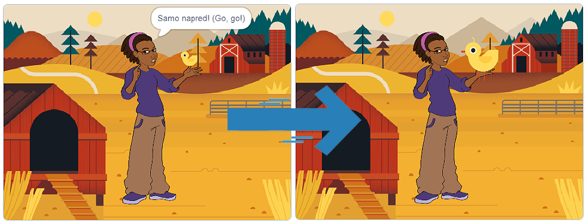

Външност¶
В Скрач спрайтовете имат един или повече костюми. Опцията да сменяме костюми ни дава възможността да създаваме интересни програми и анимации. За тази цел използваме блокове от категорията Външност.
Мислене, говорене, смяна на размер, смяна на костюми¶
Ще създадем програма, наречена Ферма, която има два спрайта – момиче Ейвъри и пиле. Ще ги поставим в обстановката на ферма (фон Ферма). Ще поставим пилето в ръката на момичето. Момичето ще „храни” пилето и ще го гледа как расте.
{kind=link}
Ще започнем с текста на момичето. За него искаме:
Размерът й да бъде 50% по-голям от първоначалния размер (150%);
Да си мисли „толкова сладко…”
Да казва „давай, давай!”
Ще поставим пилето в ръката на момичето. За пилето искаме:
Размерът му да бъде 50% по-малък от първоначалния раззмер (50%);
Да симулира движение на кълване;
Размерът му да се увеличава с течение на програмата.

Watch the process of creating the program, which allows the sprites to think, speak, and change their size and costumes:
Както можете да видите, използвахме няколко блока от категорията Външност, за да създадем програмата Ферма:
Регулирахме размера на спрайтовете чрез използването на блока
 ;
;Сменихме размера на спрайтовете чрез използването на блока
 ;
;Показахме мислите на спрайта чрез използването на блока
 ;
;Показахме речта на спрайта чрез използването на блока ;
Сменихме костюмите на спрайта чрез използването на блока
 .
.
В допълнение на всичко споменато блокът  беше жизненоважен за нормалното функциониране на нашата програма. Повторението е силно понятие, защото прави кода по-кратък, по-ясен и по-лесен за отстраняване на грешки. Чрез използването на повторение позволихме на пилето да се движи, т.е осигурихме повторението на командата, която променя костюма. Блоковете за повторение се намират в категорията Контрол. Тази категория съдържа важни блокове, използвани за контролиране на дейността на програмата.
беше жизненоважен за нормалното функциониране на нашата програма. Повторението е силно понятие, защото прави кода по-кратък, по-ясен и по-лесен за отстраняване на грешки. Чрез използването на повторение позволихме на пилето да се движи, т.е осигурихме повторението на командата, която променя костюма. Блоковете за повторение се намират в категорията Контрол. Тази категория съдържа важни блокове, използвани за контролиране на дейността на програмата.
 Създай програма, която ще симулира функционирането на светофар. Малко помощ: Светлините на светофара не се сменят с една и съща скорост. Червените и зелените светлини остават по-дълго от жълтата.
Създай програма, която ще симулира функционирането на светофар. Малко помощ: Светлините на светофара не се сменят с една и съща скорост. Червените и зелените светлини остават по-дълго от жълтата.
Watch the process of creating the program, which allows you to simulate the functioning of a traffic light:
- Това гарантира, че мислите на спрайт остават на сцената.
- Браво!
- Той гарантира, че мислите на спрайт се променят постоянно.
- За да позволявате на мислите да се променят постоянно, трябва да използвате подходящия блок за повтаряне на командата за показване на sprite мислите.
Q-4: Привличаме вниманието ти към съществуването на блокове, които изпълняват подобни команди като тези, които вече представихме в урока. Например, блокът  уверява, че речта на спрайта няма да изчезне от сцената. Предполагаме, че само можеш да се досетиш каква е целта на блока
уверява, че речта на спрайта няма да изчезне от сцената. Предполагаме, че само можеш да се досетиш каква е целта на блока  .
.
В допълнение към гореспоменатото категорията Външност съдържа няколко други блока.
По същия начин, по който можем да избираме костюмите на спрайта, можем да избираме фона на сцената чрез използването на  .
.
Блоковете, които ни позволяват да показваме  или скриваме
или скриваме  спрайт, са също много полезни. Ще използваме тези блокове в следващите уроци.
спрайт, са също много полезни. Ще използваме тези блокове в следващите уроци.
Ще те оставим сам да откриеш как можеш да играеш с цвета и външността на твоя спрайт чрез използването на блокове за смяна на цвета или ефекта (смяна на…), за определяне на цвета или ефекта (определи…), също и за изтриване на всички графични ефекти (изчисти графични ефекти):